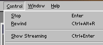
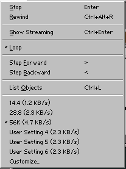

Testing movies Streaming


It is possible to test a movie streaming, before uploading. This is useful, if you need to test whether your preloader etc. works.
Step 1. Open your .swf file in Flash. (You can also press CTRL + Enter to export your .fla with default settings, and open directly in Flash.
Step 2. Click "Control" and click "Show Streaming". (You can also just press CTRL + Enter) to show the movie streaming.

That's what you need to know to play streaming.
Tip: You might also want to customize what bandwidth speed (connection) you want to show the movie at:
